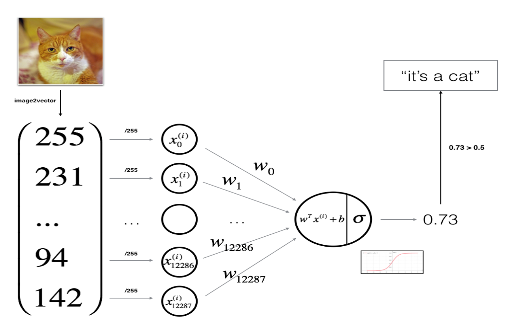
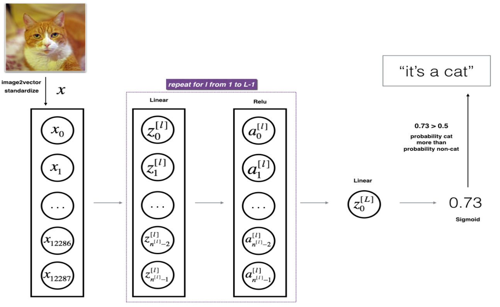
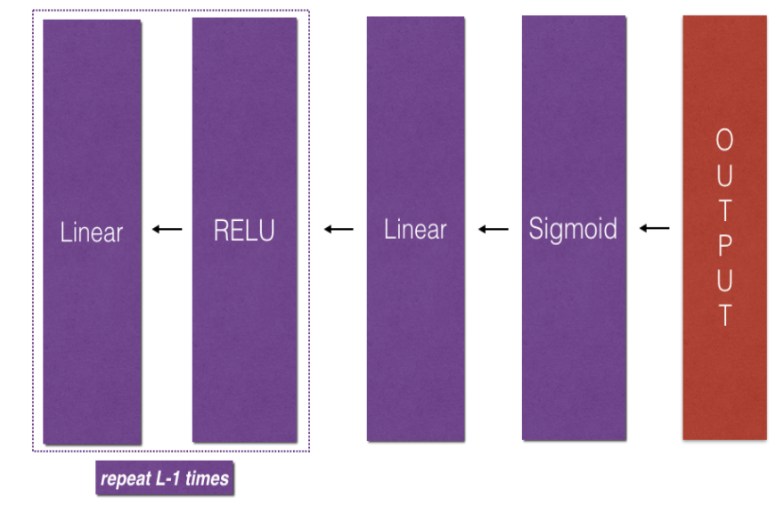

今天结束了Andrew Ng的Deep Learning系列课程Class1:Neural Networks and Deep Learning。习题中公式部分Ng仅给了结论，此处将给出完整推导。此外，在Week3练习中我对Logistic Regression和Neural Network之间的联系和区别比较模糊，本文也会将二者联系起来稍作总结。
1.从Linear Regression说起
在介绍逻辑回归(Logistic Regression)之前，我想回顾一下线性回归(Linear Regression)方法。线性回归不仅能解决线性分类问题，多元线性回归也能解决非线性分类问题。它产生的预测是连续的，这个特性使它适合对连续变量进行预测。针对一组连续或离散的序列对{$(x_0, y_0), (x_1, y_1), ...(x_n, y_n)$}, 例如图像如下：

假设其feature个数为$m$(某样本$x$中就包含很多维度的数据)， 即使用$m$元线性参数拟合该数据，则针对某一个样本$(x_i, y_i)$，假设函数(hypothesis function)$h_\theta(x_i)$为：
$$h_\theta(x_i) = \sum_{j=1}^{m}\theta_j {x^{[j]}_i}$$
接着我们使用平方损失函数(loss function)进行求预测和实际的平方差：
$$L(\theta) = \frac{1}{2m}\sum_{j=1}^{m}(h_{\theta}(x^i) - y^i)^2$$
再使用gradient descent, 对这$m$元参数$\theta$:
$$\theta := \theta - \alpha \cdot \frac{1}{m} \cdot x^T \cdot (x \cdot \theta - y)$$
平方损失函数是凸函数， 因此后续工作就是不断迭代直至收敛，其中要注意2个问题：
- 考虑到$m$越大训练误差越小，最终可能导致过拟合，因此要加正则项。
- 极大似然估计(maximum likelihood estimation)等价于最小化平方损失(minimization of MSE)的前提是：样本噪声符合高斯分布。若数据噪声不符合高斯分布，仍要按极大似然估计思想进行损失计算，可能要改为计算交叉熵(cross-entropy)。
2. Logistic Regression
此处搬运Andrew Ng课程Neural Networks and Deep Learning作业(Week2, Assignment2)中的实例： 我们将一张$64 \times 64$的图像分为RGB三层，将这$64 \times 64 \times 3$共12288个像素(其值在$[0, 255]$之间)整合为1列，因此按照Linear Regression中的说法，$x$的“参数有12288元”，如下图：

计算公式如下：
$$z^{(i)} = w^T x^{(i)} + b \tag{1}$$
$$\hat{y}^{(i)} = a^{(i)} = sigmoid(z^{(i)})\tag{2}$$
$$ \mathcal{L}(a^{(i)}, y^{(i)}) = - y^{(i)} \log(a^{(i)}) - (1-y^{(i)} ) \log(1-a^{(i)})\tag{3}$$
$$ J = \frac{1}{m} \sum_{i=1}^m \mathcal{L}(a^{(i)}, y^{(i)})\tag{4}$$
用一张图描述此过程：

逻辑回归相比线性回归，差异从公式(2)(3)中已初见端倪：
1. 损失函数的计算从MSE变为cross-entropy。
神经网络中"The choice of cost function is tightly coupled with the choice of output unit"的说法在logistic regression中同样适用。sigmoid函数的特性决定了它在$y \approx 1$和$y \approx -1$时出现“梯度消失”(saturation)。因此$log$形式的cross-entropy能极大地减缓此效应，只有在$y \approx 1 $且$z$是很大的正值，或者$y \approx -1 $且$z$是很小的负值时，此现象才会发生。Ian Goodfellow的Deep Learning中给出了详细推导过程。
2. 增加了激活函数(activation function)。
这是很关键的一步，它相当于对原有的线性加权函数做了一个非线性变换。那么非线性变换的意义在哪？
为了更清晰地解释非线性变换的意义，此处将激活函数简化为ReLU(Rectified Linear Unit) function, 其函数形式：
$$f(x)=max(0, x)$$
图像如下：

图中橘黄色的直线是对ReLU的改进，称为leaky ReLU。
假设现在我们要使用线性模型构造异或门(XOR)，即对如下几组输入： $$x_1 = [0, 0] \qquad x_2 = [0, 1] \qquad x_3=[1, 0] \qquad x_4=[1, 1] $$
希望$y$值分别是: $$[0, 1, 1, 0]$$
按照线性函数的平方损失／线性模型进行训练，其最终参数$w$为0，$b$为0.5，即对任何输入$x$，其预测结果均为$\frac{1}{2}$，这显然不符合预期。线性模型的一大问题在于它只对输入特征进行线性加权，无法学习“两个特征之间的交互作用”。我们将输入数据展示出来：
线性回归困境在于：
- 当$x_1=0$时，$y$随着$x_2$的增大而增大(从0->1)
- 当$x_1=1$时，$y$随着$x_2$的增大而减小(从1->0)
在这里，Logistic Regression增加了激活函数，相当于对原线性函数做了一个非线性变换，于是假设函数将变为：
$$f(x, W, c, \omega, b) = {\omega}^Tmax\{0, W^Tx + c\} + b \tag{5}$$
其实就是在公式(1)外套了一个非线性函数。此时设置：
$$W = \begin {bmatrix}1 & 1\\ 1 & 1\end{bmatrix}$$
$$c = \begin {bmatrix}0 \\ -1 \end{bmatrix}$$
$$\omega = \begin {bmatrix}1 \\ -2 \end{bmatrix}$$
$$b=0$$
按条件：
$$X = \begin {bmatrix}0 & 0\\ 0 & 1\\ 1 & 0\\ 1 & 1\end{bmatrix}$$
于是：
$$XW = \begin {bmatrix}0 & 0\\ 1 & 1\\ 1 & 1\\ 2 & 2\end{bmatrix}$$
再加上$c$：
$$XW+c = \begin {bmatrix}0 & -1\\ 1 & 0\\ 1 & 0\\ 2 & 1\end{bmatrix}$$
根绝ReLU特性：
$$max\{0, XW+c\} = \begin {bmatrix}0 & 0\\ 1 & 0\\ 1 & 0\\ 2 & 1\end{bmatrix}$$
其图像为：
我们发现此时已经线性可分了，外层使用线性函数即可划分出超平面：
$${\omega}^Tmax\{0, XW + c\} + b = \begin {bmatrix}0 \\ 1 \\ 1 \\ 0\end{bmatrix}$$
一个不规范的表述是：非线性的激活函数能"学习"特征之间的相互作用，从而使线性回归不可分(区别于线性不可分)的数据变的可分。顺便一提，ReLU函数相比sigmoid函数，有如下优势：
- ReLU的近似线性，使其在反向梯度计算时方便计算和推演。而事实上它是非线性的，因此能解决线性回归不能解决的分类困境。
- 反向传播梯度下降更快。sigmoid函数被弃用的一个重要原因就是其在$[-1,1]$区间接近两端的位置梯地下降缓慢，训练时间很长。
3. LR的一些推导和思考
上文公式(4)中，我们已经给出了损失函数$J$的计算方法，剩下的就是求梯度。Ng在Programming Assignment中给出了如下公式：
$$ \frac{\partial J}{\partial w} = \frac{1}{m}X(A-Y)^T\tag{6}$$ $$ \frac{\partial J}{\partial b} = \frac{1}{m} \sum_{i=1}^m (a^{(i)}-y^{(i)})\tag{7}$$
下面给出推导过程。对某个样本，其预测值为$a$，真实值为$y$, 参数分别为$\omega$和$b$，则当前已知条件为:
$$\begin{cases}J=-(ylog(a)+(1-y)log(1-a)) \\ a=sigmoid(z) \\ z=\omega x + b \end{cases}$$
sigmoid函数特性如下：
$$g(z) = \frac{1}{1+e^{-z}}$$
$$g'(z) = g(z) \cdot (1-g(z))$$
因此： $$\frac{\partial{J}}{\partial{\omega}} = \frac{\partial{J}}{\partial{a}} \cdot \frac{\partial{a}}{\partial{z}} \cdot \frac{\partial{z}}{\partial{\omega}} $$
$$= (-\frac{y}{a} + \frac{1-y}{1-a}) \cdot a(1-a) \cdot x$$
$$= (a-y)x$$
此时不难看出: $$\frac{\partial{J}}{\partial{b}} = a-y$$
整个Logistic Regression到此结束。
4. Neural Network
对一个N层神经网络，如下图：

每层内部的前向计算公式均为：
$$\begin{cases}Z^{[l]}=W^{[l]}a^{[l-1]} + b^{[l]} \\ a^{[l]} = g(z^{[l]}) \end{cases}$$
其中所有隐含层的激活函数均为Rectified function，输出层的激活函数为sigmoid function。结构如下：

关于DNN梯度的计算，Ng也只给出了公式：
$$ dW^{[l]} = \frac{\partial \mathcal{L} }{\partial W^{[l]}} = \frac{1}{m} dZ^{[l]} A^{[l-1] T} \tag{8}$$ $$ db^{[l]} = \frac{\partial \mathcal{L} }{\partial b^{[l]}} = \frac{1}{m} \sum_{i = 1}^{m} dZ^{[l]}\tag{9}$$ $$ dA^{[l-1]} = \frac{\partial \mathcal{L} }{\partial A^{[l-1]}} = W^{[l] T} dZ^{[l]} \tag{10}$$
其中：
$$dZ^{[l]} = dA^{[l]} * g'(Z^{[l]}) \tag{11}$$
推导也不难：
$$ dW^{[l]} = \frac{\partial \mathcal{L} }{\partial W^{[l]}} = \frac{\partial \mathcal{L} }{\partial Z^{[l]}} \cdot \frac{\partial Z^{[l]} }{\partial W^{[l]}}$$
$$= dZ^{[l]} A^{[l-1] T}$$
我们发现，要计算$dZ^{[l]}$又需要$dA^{[l]} $，而想要知道$ dA^{[l]}$又得知道$ dZ^{[l+1]} $，这种“顺藤摸瓜”的寻找只有在输出层才会终止，在那里: $$da = - \frac{y}{a} + \frac{1-y}{1-a} \tag{上文已推导过}$$
因此对神经网络梯度的更新将由深向浅层逆序进行，部分代码如下：
注意到公式(8)(9)(10)并不像LR中一样给出最终数据的计算公式，而是每次都使用当前的临时数据，例如要计算$ dW^{[l]} $需要$ dZ^{[l]} $和$A^{[l-1] T}$，因此每一层需要缓存当前的$A,W,Z,b$等信息。
之后就是选取一个合适的学习速率$\alpha$，对$W$和$b$不断更新。此处再回看LR，发现二者本质很相似，可以说Logistic Regression是1-layer的NN，它只包含输入和输出层，无隐含层。
5. 参考材料
- Andrew Ng的Deep Learning课程
- Derivatives for logistic regression - step by step
- Ian Goodfellow, Yoshua Bengio, and Aaron Courville (2017). Deep Learning